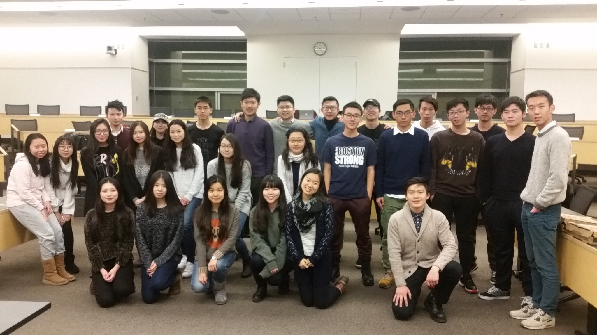

MCBC致力于帮助广大中国及华裔学生寻找工作机会，提供一个知识与经验分享的平台。自创立以来，MCBC飞速发展，成为了第一个也是唯一被ROSS商学院认可、专业为中国学生服务的商学社团。我们已连续两年举办国际职业峰会，邀请到了高盛、麦肯锡、摩根大通、安永等的学长学姐们传授经验。加入MCBC，你可以参与商业案例与股市走向分析，以及各种讲座来提升你的软实力。你还将获得一对一的免费导师辅导，手把手教你写简历，建立只属于你的职业规划。2015-16 Ross商学院申请季我们的application workshop更是达到了100%的录取率！了解更多详情请参加位于Ross的Fall Festival，选择加入我们吧！
